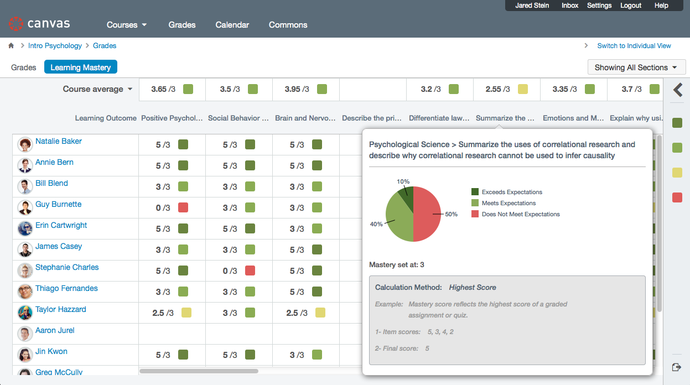

|  |
Introducing: Canvas LMSThe Canvas Learning Management System provides a tool to simplify teaching and learning by connecting all the digital tools teachers and students use in one place. Explore our site below to see how we can help you. |
We're here to help you!
Departmental MeetingsWe will be presenting information about the migration at departmental meetings this Spring. |
1:1 Consultations
We can help you solve problems specific to your course or discipline.
|
Group TrainingRequest a small group training for your department. |
Need Help?Feel free to set up a consultation to get you started with Canvas! |
Contact Us
Don't see what you're looking for? |
Online ResourcesVisit the Canvas Instructor Guide or check back to this site in the near future as we develop more how-to resources. |
Initial Course Migrations
Following a successful pilot in Fall 2016, we will start migrating Summer 2017 courses to Canvas.
Request a Canvas site for your Spring course.
Course Migrations
We will continue to migrate courses for the upcoming term with edits based on student and faculty feedback. By migrating courses slowly over to Canvas, we are able to continuously address pain points for both students and faculty while developing more complete support materials.
Feel free to contact us with feedback at any time.
Only Canvas Available
At this point in time, we expect all courses in Carnegie Mellon to use Canvas LMS. We hope to have established a full support system for student and faculty, as well as standardized course templates for specific departments.
June 2018Contact Us
-
412-268-9090